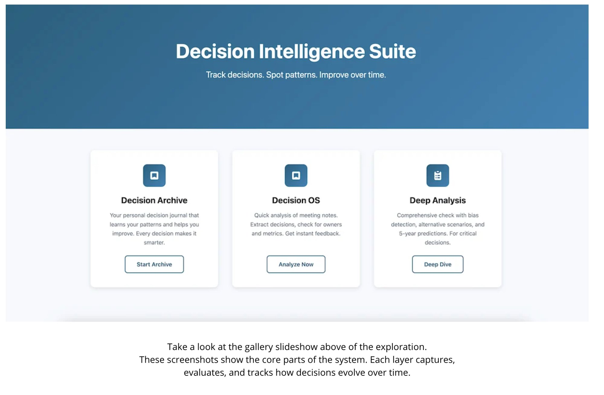
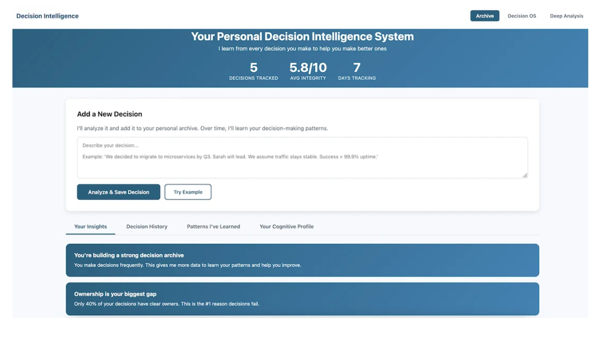
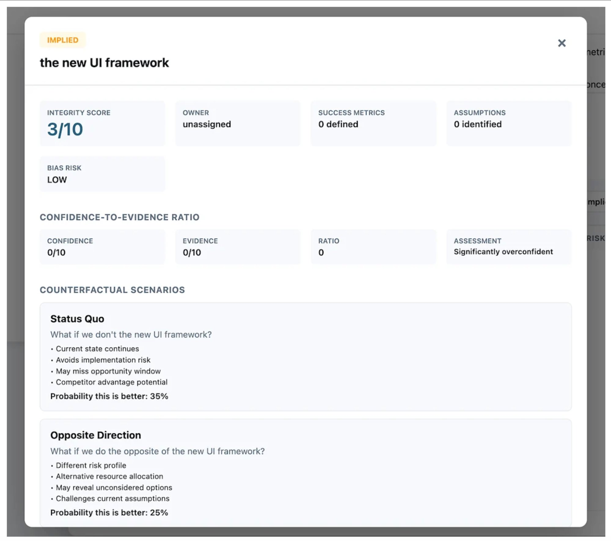
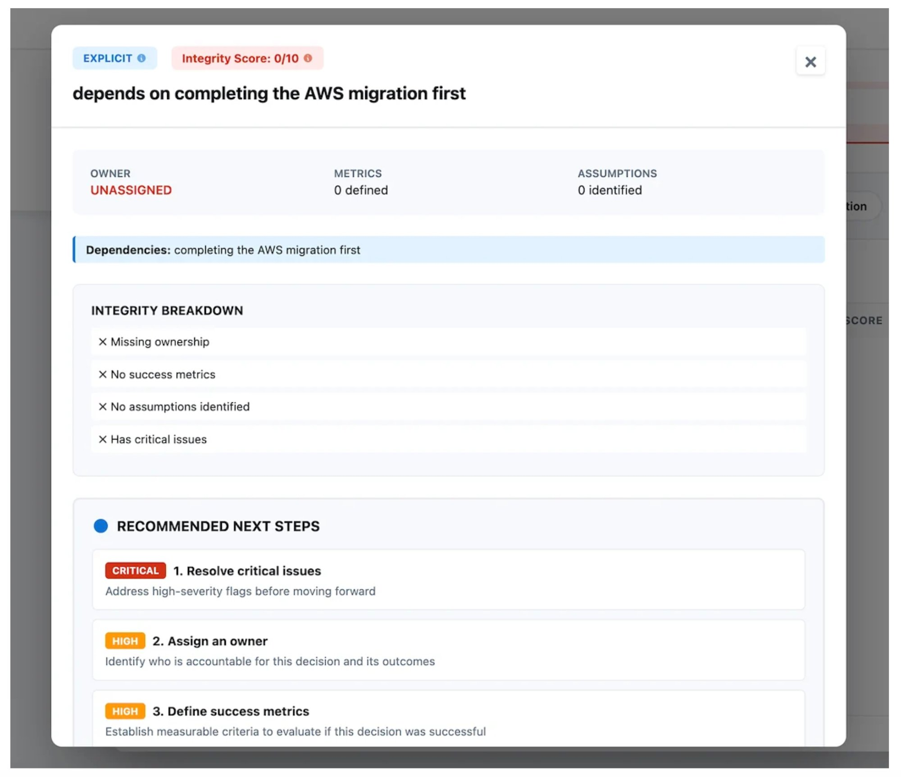
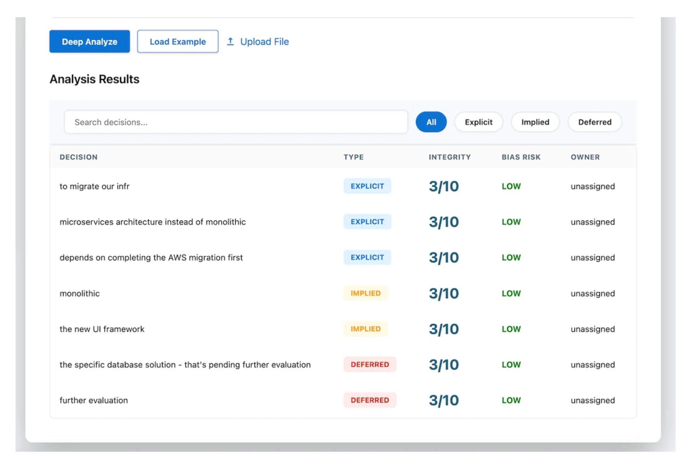
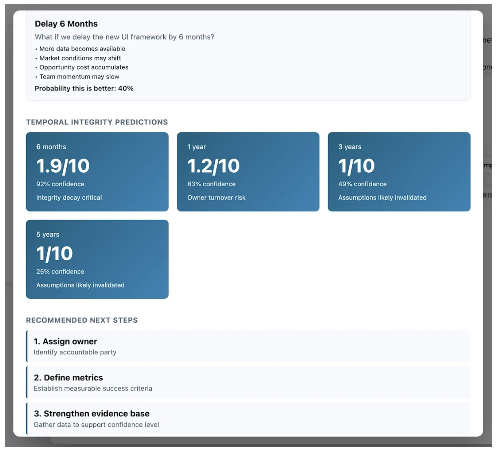
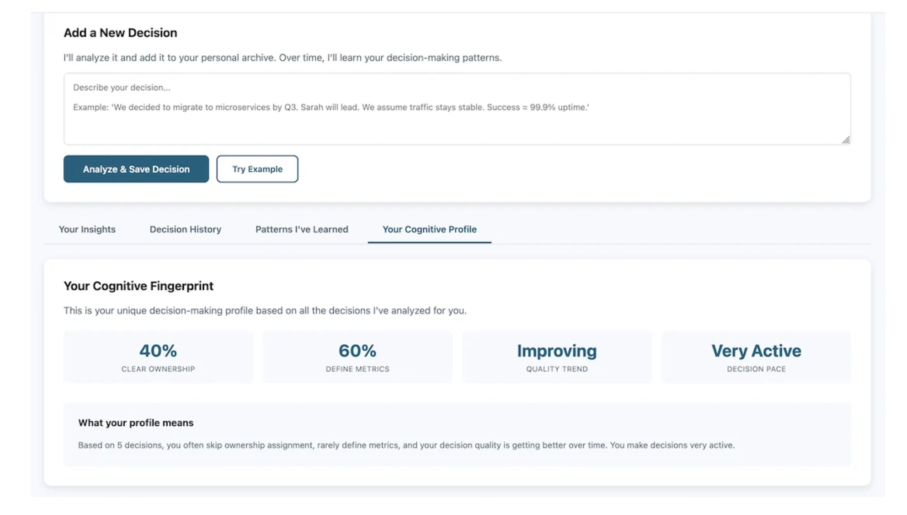
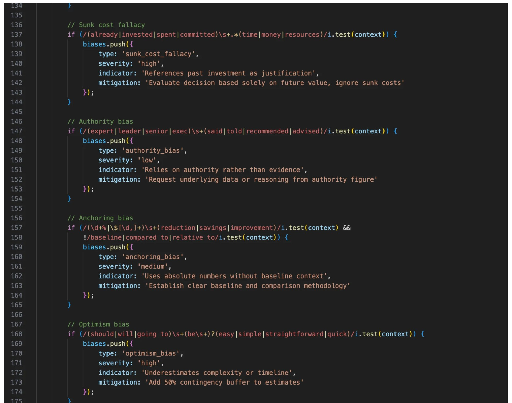
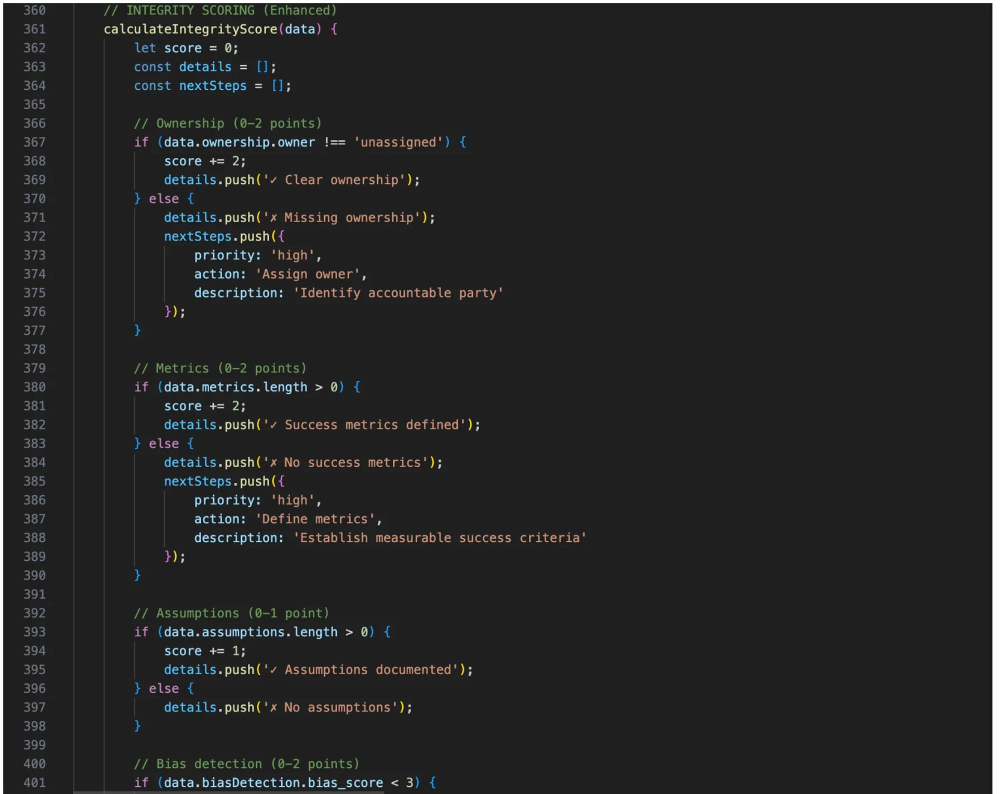

Most AI tools optimize for answer generation. This system evaluates how decisions are structured — tracking reasoning integrity, detecting cognitive biases, and predicting how decisions hold up over time.
This isn't a dashboard that visualizes data someone else computed. It's a complete reasoning engine: three AI-powered scoring modules, five cognitive bias detectors, temporal integrity prediction, counterfactual scenario modeling, and a persistent decision archive that learns your patterns over time. Designed, architected, and engineered entirely by me.
Full walkthrough of the Decision Intelligence system.

Three integrated modules: Decision Archive (pattern learning), Decision OS (quick analysis), and Deep Analysis (bias detection + 5-year predictions).
The core interface tracks every decision you feed it — scoring integrity on a 0–10 scale by evaluating ownership, success metrics, documented assumptions, and cognitive bias risk. It doesn't just tell you a decision is weak. It tells you exactly why and what to do about it.

Personal dashboard: 5 decisions tracked, 5.8/10 average integrity, 7 days of tracking. Real-time insights surface patterns as you use it.

Analysis results: each decision scored for integrity, classified by type, and assessed for bias risk. Filterable, searchable, actionable.
Open any decision and the system surfaces everything you need: integrity breakdown, dependencies, recommended next steps with severity tags, confidence-to-evidence ratios, and counterfactual scenarios that model what happens if you go a different direction.

Decision detail: integrity breakdown flags missing ownership, metrics, assumptions, and critical issues. Next steps are prioritized by severity.

Counterfactual modeling: Status Quo (35% probability better), Opposite Direction (25%), Delay 6 Months — each with explicit tradeoff analysis.
The system doesn't just evaluate decisions at the moment they're made. It projects how they'll hold up over time — 6 months, 1 year, 3 years, 5 years — with confidence intervals that decay as assumptions age and owners change.

Temporal integrity predictions: this decision degrades from 1.9/10 at 6 months to 1/10 at 3 years. The system flags why — owner turnover risk, assumption invalidation.
Over time, the system builds a profile of how you make decisions. Where you consistently skip ownership. Where you forget to define metrics. Whether your quality trend is improving or declining. It's a mirror for your reasoning patterns — backed by data, not intuition.

Your Cognitive Fingerprint: 40% clear ownership, 60% metrics defined, improving quality trend, very active decision pace.
This is a fully shippable JavaScript application — not a mockup, not a prototype, not a UI wrapper over someone else's API. Three scoring engines using regex pattern matching and weighted algorithms. Five cognitive bias detectors (sunk cost fallacy, authority bias, anchoring bias, optimism bias, confirmation bias). Incentive conflict mapping across stakeholder groups. Processing time under 2 seconds per decision. File upload via FileReader API. Structured JSON output.

Production code: bias detection, incentive conflict mapping, and integrity scoring — all running client-side in vanilla JavaScript.

Enhanced integrity scoring: ownership (0–2 points), metrics (0–2), assumptions (0–1), bias detection (0–2), with structured next-step generation.